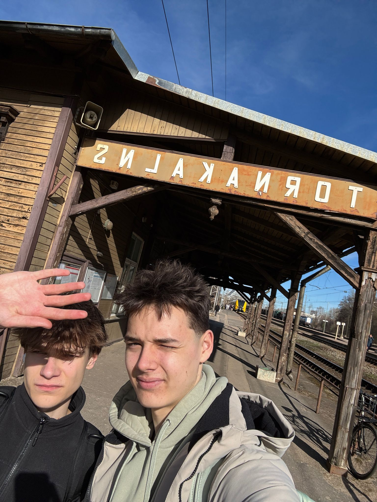
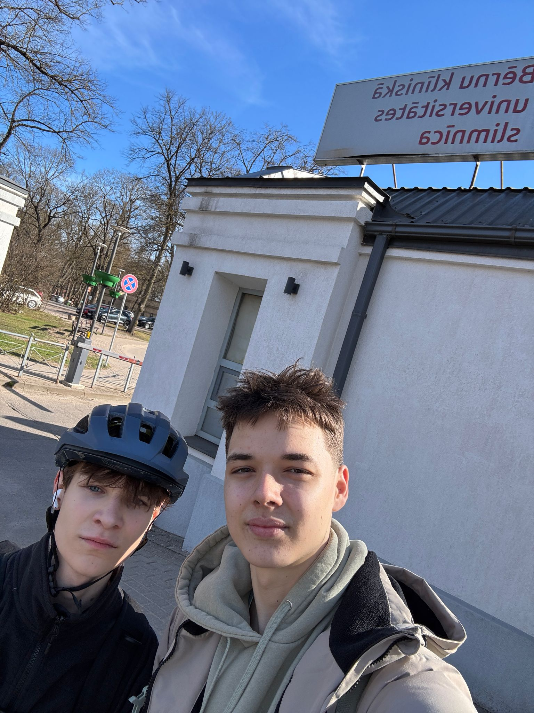

Nozīmīgās vietas
Romānā ir pieminētas vairākas lokācijas, mēs apmeklējām dažas no tām.
Dzelzceļa stacija

"Tik tiešam - tiek lādēti vagoni. Tos piebāž līdz malām ar vēl siltām asinīm, izmisušu garu un visrūgtākajām asarām pasaulē." (148.lpp.)
Arkādijas parks
"No Kokles ielas uz Hermāņa ielu, vēl trīs soļi, skriešus pāri tramvaja sliedēm un esam Arkādijā. Ātrāk pie tiltiņa, kur šļakstās ūdenskritums". (147.lpp.)
Arkādijas parks ar savu tiltiņu un ūdenskritumu kļūst par nozīmīgu vietu romāna darbības attīstībā, atspoguļojot Rīgas pilsētvides detaļas.
Bērnu slimnīca

"Caur skropstām ieraugu Dīķa ielas galu un Bērnu slimnīcas žogu".(174.lpp.)